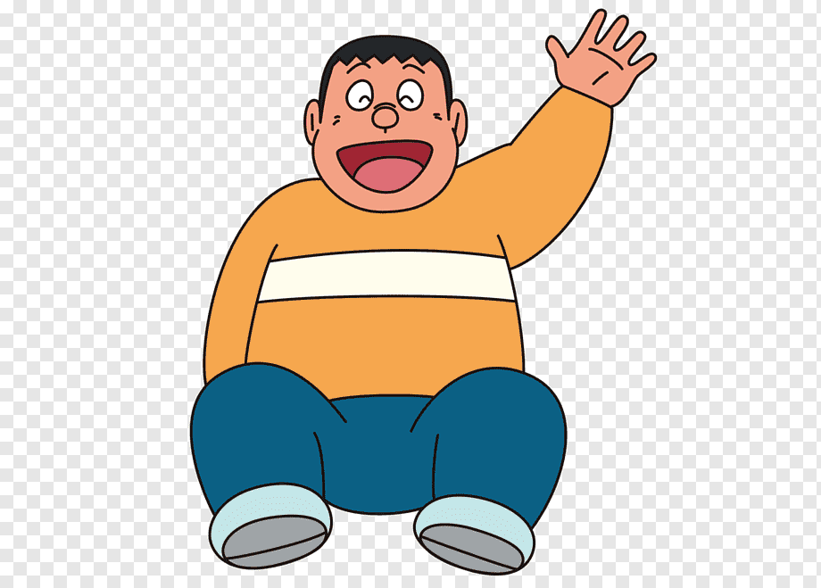

Gian
Personality. Gian is known for his overconfidence in his terrible singing and cooking skills, of which he constantly abuses to torture his surroundings, as he was never aware of these flaws. He is tone deaf to the horrendous singing as shown in some episodes where he sing and totally unaffected by it.
Full Name :Gian Goda
Nationality :Japanese
Age :9 (1973) 10 (1979 and 2005)
Birthday :May 8, 1962 (1969) May 8, 1965 (1973) May 8, 1974 (1979) May 8, 2000 (2005)
Hometown :Tokyo
 Back to Home
Back to Home